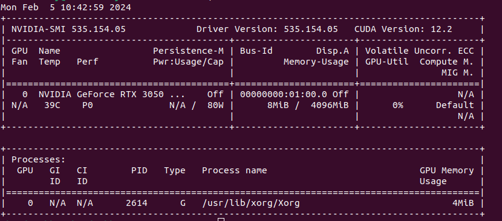

101 - Nvidia-smi
How to read nvidia-smi output to monitor GPU usage, covering what the tool is, where to get it, and the GPU state and processes tables.
In our daily work, we use GPU alot rather than CPU in the heavy computations, so How to monitor the usage?
In this doc, we will try to talk about main points and the support points for these main points, so please refer to the main source of knowledge "The Official DOCUMENTATION" for nvidia-smi
Table of Content
What is NVSMI?
Also known as Nvidia-smi, which is a command line utility tool by Nvidia.
Where to get?
It could be installed along with CUDA toolkit.
How it looks?
Let's run it in our terminal, and the output should be like this:

Running Nvidia-smi in my local machineFrom the output we can first get the following GPU ATTRIBUTES info:
- The Nvidia driver version info.
- The CUDA version available that my GPU supports
- The Nvidia GPU version.
- The Current processes running that uses the GPU [if there is any process running]
- The Memory usage.
Output Desicription
The output generated is two tables;
- The state of GPU.
- The Processes table.
GPU's State Table
Please refer to the docs, to get all the info, options, and capabilities of the that simple command "nvidia-smi".
Processes Table
They are the Processes using GPUs, this table lists all the processes having Compute or Graphics context on the devie.
- Compute processes are reported on all the fully supported products.
- Graphical processes is limited to the supported products starting with Kepler architecture.
There are some values for each entity we should be aware of:
|Parameter|Description|Value| |-|-|-|
Driver models
Microsoft and NVIDIA offer two driver modes for Windows;
- The Windows Display Driver Model (WDDM): On workstations and laptops, this is usually the default mode. This driver mode allows shared usage of the NVIDIA GPU for display output and GPGPU computing.
- Tesla Compute Cluster (TCC): This driver mode uses the NVIDIA GPU for GPGPU computing exclusively.
|Feature|WDDM (Windows Display Driver Model)|TCC (Tesla Compute Cluster)| |-|-|-| Purpose|Graphics rendering and display management on Windows.|High-performance computing (HPC) and GPU compute tasks without display functions. Operating Mode|Primarily for graphics and display.|Dedicated compute mode without display support. GPU Compatibility|Consumer-grade NVIDIA GPUs (Geforce Series, etc.)|Typically available on certain NVIDIA Tesla and Quadro GPUs. Display Output|Supports display functions.| Does not support display output in TCC mode. Use Cases|General-purpose graphics rendering, gaming, multimedia, etc.| High-performance computing, scientific simulations, data processing, parallel computing tasks. Driver Type|WDDM drivers are used.| TCC drivers are often used in TCC mode. System Integration|Integrated with the Windows operating system.| Typically used in server environments for compute-intensive tasks. GPU Management|Provides a balance between graphics and compute tasks.| Optimized for compute performance with minimal emphasis on graphics.
Conrtol Your GPUs
A great start of using the nvidia-smi command line, in through the tutorial illustrated by Eliot Eshelman in Microway-Nvidia-smi-Control_Your_GPUs.
Let's write down the most might-look important ones for our reference;
|Objective|Details|Command| |-|-|-| Query GPU devices|To get all available Nvidia devices|nvidia-smi -L Query GPU devies details|To get details about GPU|nvidia-smi --query-gpu=index,name,uuid,serial --format=csv Monitor Overall GPU usage with 1-second update intervals||nvidia-smi dmon Monitor per-process GPU usage with 1-second update intervals||nvidia-smi pmon Query GPU performance|To review the current state of each GPU and any reasons for clock slowdowns, use the PERFORMANCE flag|nvidia-smi -q -d PERFORMANCE Query GPU clock|To review the current GPU clock speed, default clock speed, and maximum possible clock speed, run|nvidia-smi -q -d CLOCK Query GPU supported clocks||nvidia-smi -q -d SUPPORTED_CLOCKS |Prinitng all GPU details| To list all available data on a particular GPU, specify the ID of the card with -i.|nvidia-smi -i 0 -q Priniting specific GPU details|Excerpt for a card running GPU|nvidia-smi -i 0 -q -d MEMORY,UTILIZATION,POWER,CLOCK,COMPUTE Query Nvidia Link "NVlink" status|To get info about the nvlink status|nvidia-smi nvlink --status Query Nvidia Link "NVlink" capabilities|To get info about the nvlink capabilities|nvidia-smi nvlink --capabilities Inquery about the system/GPU topology||nvidia-smi topo --matrix
Note
- A bandwith note from Making machine learning models faster by horace-brr_intro, found here
`This cost of moving stuff to and from our compute units is what's called the "memory bandwidth" cost. As an aside, your GPU's DRAM is what shows up in nvidia-smi, and is the primary quantity responsible for your lovely "CUDA Out of Memory' errors.`
References
- Nvidia docs for Nvidia-smi could be found here.
- A fast quick guide from medium: Explained Output of Nvidia-smi Utility
- Steps to help control you GPU monitoring from microway, nvidia-smi:control your GPUs, could be found here.
- NVIDAI Management Libarary - NVML docs could be found here
- Python binding to the Nvidia Management Libaray could be found here